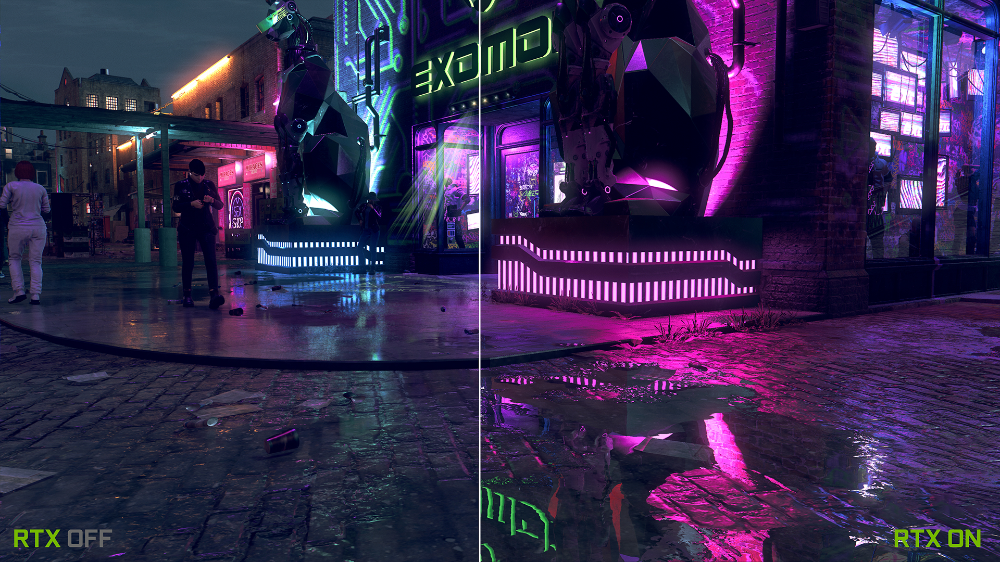

Le RTX

Retourner sur la page d'avant
Considéré comme le Saint Graal des technologies graphiques dans l'industrie des jeux vidéo, le ray tracing permet de simuler le comportement physique de la lumière afin d'offrir un rendu cinématographique en temps réel d'une beauté sans précédent, y compris dans les jeux les plus intenses.
Voici donc la liste actuelle des jeux qui supporteront ces technologies:
| DLSS | RTX |
| Anthem | Amid Evil |
| Amid Evil | Atomic Heart |
| Atomic Heart | Battlefield V |
| Battlefield V | Bright Memory |
| Boundary | Call of Duty: Modern Warfare |
| Bright Memory | Call Of Duty: Black Ops Cold War |
| Call Of Duty: Black Ops Cold War | Control |
| Control | Crysis Remastered |
| Cyberpunk 2077 | Cyberpunk 2077 |
| Death Stranding | Deliver Us The Moon |
| Deliver Us The Moon | Doom Eternal |
| Edge Of Eternity | Dying Light 2 |
| F1 2020 | Enlisted |
| Final Fantasy XV | Fortnite |
| Fortnite | Ghostrunner |
| Ghostrunner | Justice |
| Justice | JX3 |
| JX3 | Mechwarrior V: Mercenaries |
| Marvel’s Avengers | Metro Exodus |
| Mechwarrior V: Mercenaries | Minecraft |
| Metro Exodus | Moonlight Blade |
| Minecraft | Mortal Shell |
| Monster Hunter: World | Pumpkin Jack |
| Mortal Shell | Ready Or Not |
| Mount & Blade II Bannerlord (update de novembre) | Ring Of Elysium |
| Ready Or Not | Quake II RTX |
| Scavengers | Shadow of the Tomb Raider |
| Shadow of the Tomb Raider | Stay in the Light |
| Wolfenstein Youngblood | Synced: Off-Planet |
| Vampire: The Masquerade – Bloodlines 2 | The Witcher III |
| Watch Dogs: Legion | Vampire: The Masquerade – Bloodlines 2 |
| Xuan-Yuan Sword VII | Watch Dogs: Legion |
| World Of Warcarft: Shadowlands | |
| Xuan-Yuan Sword VII | |
| Wolfenstein: Youngblood |